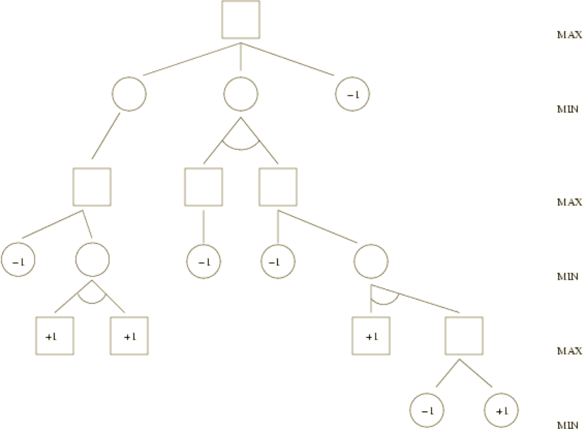
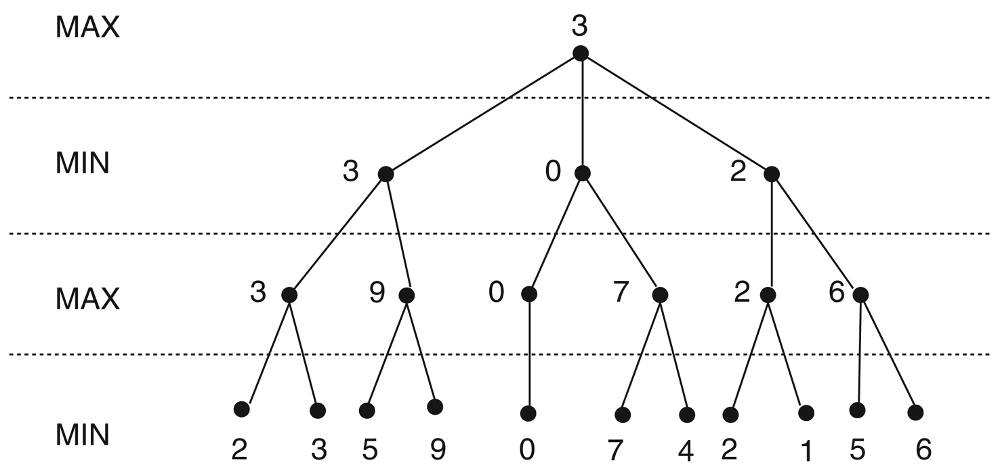
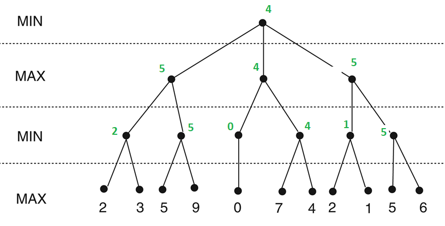
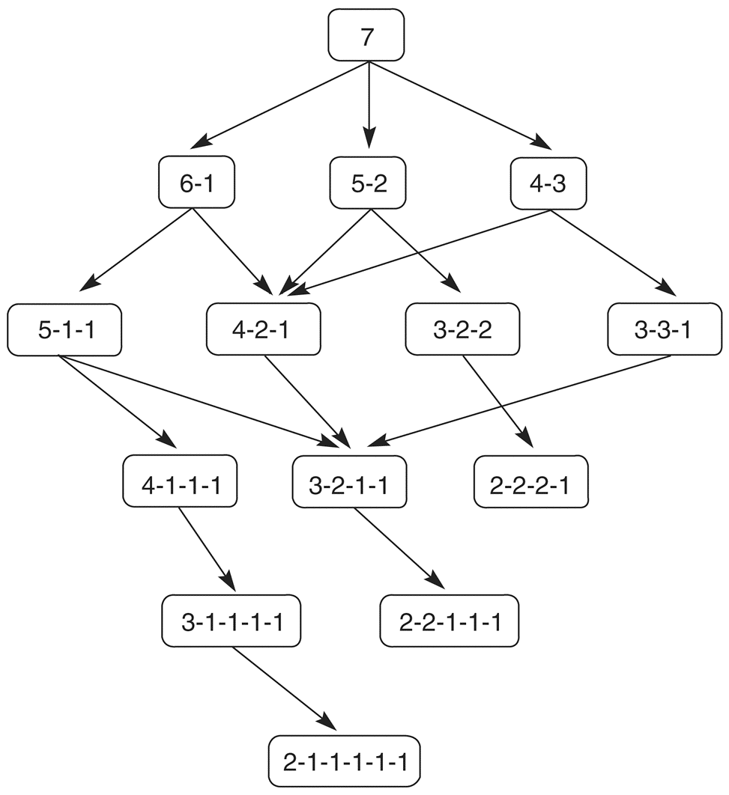
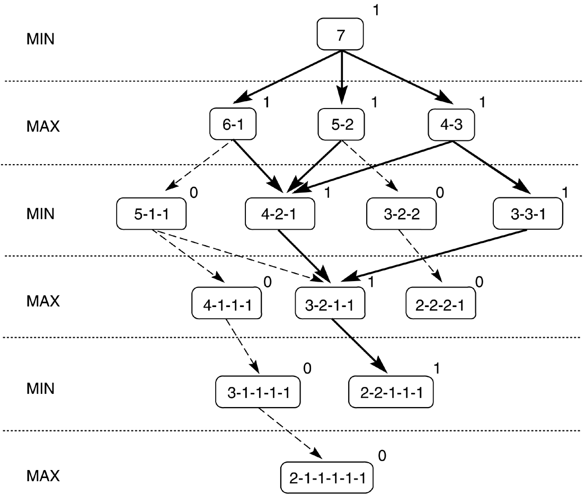
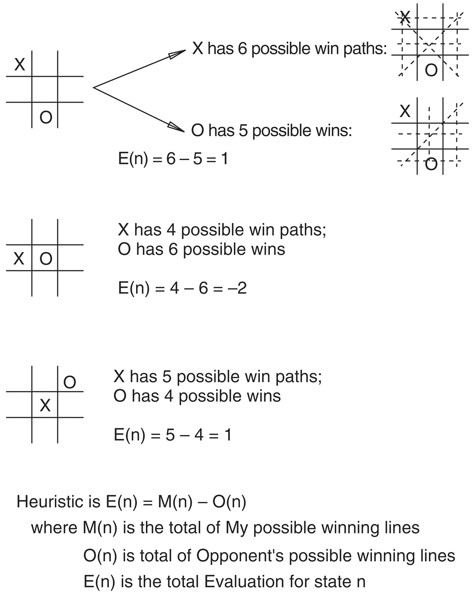
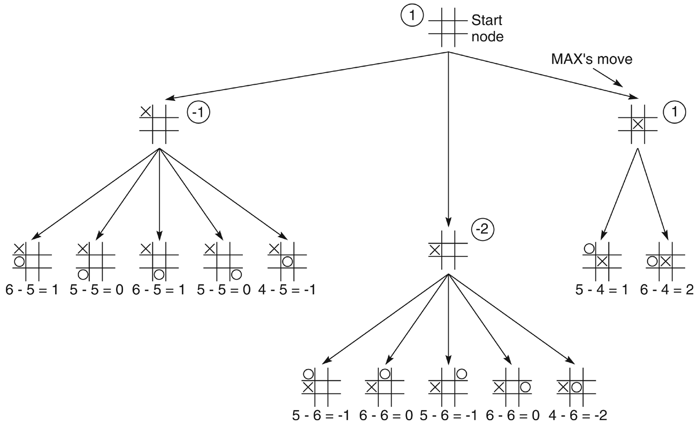
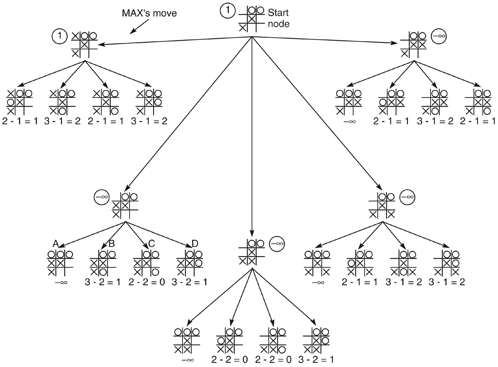
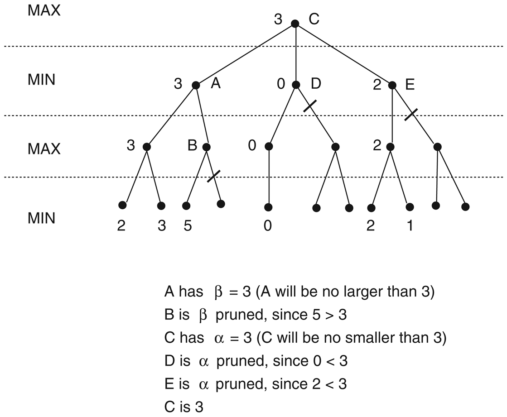

Minimax, evaluation functions, and alpha-beta pruning — how a computer plays to win against an opponent.
Module 8 · Based on the course slides & Russell & Norvig, AIMA Chapter 5
Intermediate Games ~45 minPrerequisites: Modules 4–6 (Problem Solving & State Spaces, Uninformed Search, and Informed Search & A*). You should be comfortable with state spaces, search trees, and heuristic evaluation before starting.

Games have always been a proving ground for artificial intelligence — from Shannon and Turing's first chess programs to Deep Blue and AlphaGo. Two-person board games such as tic-tac-toe, chess and Go are in one sense just search problems, but they are markedly harder than the puzzles of the previous modules, for two reasons:
We restrict attention to the classic, well-behaved case: two-player, zero-sum, perfect-information games. Two-player means exactly two agents alternate turns. Zero-sum means what is good for one player is exactly as bad for the other — there is a single number (the utility) that one side wants to push up and the other wants to push down. Perfect information means both players see the entire state at all times (no hidden cards, no dice).
| Player | Goal | Chooses |
|---|---|---|
| MAX | Maximise the final score (the utility). | The move leading to the highest-valued child. |
| MIN | Minimise MAX's score (the opponent). | The move leading to the lowest-valued child. |
The two players take turns, so the levels (called plies) of the game tree alternate: a MAX level, then a MIN level, then MAX again, and so on down to the leaves. The root is MAX — the player "to move" for whom we are computing the best action.
The core idea of minimax is to assume that both players play optimally — MAX always maximises, MIN always minimises — and then compute, for every node, the value it would have under that assumption. This is the node's minimax value. Because a node's value depends on its children, we compute values bottom-up: from the leaves back toward the root.
Once the root has a value, MAX plays the move that leads to the highest-valued child. That move is guaranteed to be the best possible against an optimal opponent.

Read the tree above from the bottom up. The leaves carry their utility values, handed to them directly. One level up sits a row of MIN nodes: each takes the minimum of the leaves beneath it, because MIN, moving next, will always pick the outcome worst for MAX. Above them sit MAX nodes, each taking the maximum of the MIN values below — MAX picks whichever branch offers the largest guaranteed value. Continuing this alternation all the way up, the root ends up with value 3: the best score MAX can force, and the number that identifies MAX's optimal opening move.

The same recipe applies to any finite game tree: label the leaves, then repeatedly collapse the deepest unlabelled level — taking a minimum under MIN nodes and a maximum under MAX nodes — until only the root remains. Here is the standard recursive formulation:
MAX-VALUE and MIN-VALUE call each other, descending the tree; each returns as soon as it hits a terminal state and then backs up the max (or min) of the recursive results. MINIMAX-DECISION at the root simply picks the action whose subtree returned the best value.
O(bm), where b is the branching factor and m is the maximum depth: minimax examines every node.O(bm) with a depth-first implementation.For real games, bm is astronomical. Chess has b ≈ 35 and games run 80+ plies, so the full tree has on the order of 10120 nodes — complete minimax is impossible. That is the problem the rest of this module solves.
To see minimax back up real win/loss labels, take a variant of Nim from the course slides. We start with a single pile of tokens. A move splits one pile into two piles of different sizes — for example a pile of 6 may become 5+1 or 4+2, but not 3+3. Play alternates; the player who cannot move loses (a pile of 1 or 2 cannot be split into two unequal non-empty piles). Because the piles only ever get smaller, the whole state space of a small game can be searched exhaustively.

Every path from the root to a leaf is a complete game. A leaf is a position in which the player to move has no legal split — and therefore loses. To decide whether the first player has a forced win, we score each leaf and run minimax over the whole tree.

Score each leaf as 1 if it is a win for MAX and 0 if it is a loss, then back the values up with the usual rule. At a MAX node the value is the maximum of its children: MAX is happy if any child leads to a win (a single 1 makes the node 1). At a MIN node the value is the minimum: MIN is happy if any child leads to a MAX loss (a single 0 makes the node 0). Propagating these 1s and 0s upward labels every node as a forced win or a forced loss. The label that reaches the root tells the first player, before a single token is moved, whether perfect play guarantees them the game — and the winning child at each node is exactly the move to make.
When the tree is small enough to expand fully, minimax does not merely estimate — it solves the game. Every node is definitively a win or a loss, so from the starting position we already know the outcome under perfect play, together with the exact move to reach it at every step. This is precisely how games like tic-tac-toe (and, with vast computation, checkers) have been solved outright.
Nim was small enough to solve completely. Chess and Go are not: we can never expand the tree down to its true leaves. The practical answer is to search to a fixed depth — a fixed number of plies determined by the time and memory available — then stop and apply a heuristic evaluation function to score the nodes at that cutoff depth, exactly as if they were leaves. Minimax those scores back up as usual, and MAX plays the resulting best move.
The evaluation function is the heart of a game-playing program. A classic one from the slides is the “most winning lines” heuristic for games like tic-tac-toe:
Here M(n) is the number of complete lines (rows, columns, diagonals) still open to MAX — lines containing none of the opponent's marks — and O(n) is the number still open to the opponent. A large positive E(n) means MAX has many ways to win and the opponent few; a negative value means the reverse. It is cheap to compute yet captures real positional strength.



In these two-ply examples the search looks ahead just two moves: MAX's candidate move, then each of MIN's replies. The positions two plies down are scored with E(n) = M(n) − O(n), the MIN nodes take the minimum of their children (the opponent's best reply), and the root MAX node takes the maximum — selecting the opening move with the strongest guaranteed evaluation.
Fixed-ply search has a dangerous blind spot. Because the search simply stops at depth d, a decisive event lurking just beyond the cutoff — a checkmate, a queen capture, a forced loss — is invisible. The program may score a position as excellent when disaster (or a win) sits one ply past its horizon. Deeper search pushes the horizon back but never removes it; techniques such as quiescence search (extending the search through unstable positions) exist precisely to soften this effect.
Plain minimax explores every branch of the tree — including a great many that cannot possibly change the final decision. Alpha-beta pruning is a way to skip those branches while returning exactly the same move as full minimax. It does so by carrying two bounds down the tree as it searches:

Follow the reasoning drawn on the figure. Exploring the first subtree fixes a value of 3 there, so the root MIN context gives node A a β of 3. When we then start expanding B and see a child worth 5, B is a MAX node whose value can only grow — it is already 5 > 3, so MIN above would never choose B: B is β-pruned and its remaining children go unexamined. Moving on, node C establishes an α of 3 for the branches beneath it. Now D yields a child worth 0; since 0 < 3 = α, MAX would never come this way — D is α-pruned. Likewise E produces a 2, and 2 < 3, so E is α-pruned too. After all this cutting, the value that backs up to the root is 3 — identical to full minimax, but reached after visiting far fewer nodes.
Alpha-beta returns exactly the same move as minimax — it only ever removes branches that provably cannot affect the backed-up value, so correctness is untouched. What it changes is cost. With perfect move ordering (best moves examined first) it examines only about the square root of the nodes minimax would, an effective time of O(bm/2) instead of O(bm). In practical terms that lets a program search roughly twice as deep in the same amount of time — an enormous gain in playing strength for no loss in accuracy.
Three problems, building from mechanical to conceptual. Work each on paper before opening the solution — backing up a game tree by hand once is worth ten readings.
The root is a MAX node with three children, each a MIN node. The leaves (left to right) are: under the first MIN node 3, 12, 8; under the second 2, 4, 6; under the third 14, 5, 2. Compute the minimax value of the root and state MAX's best move (left, middle or right).
Each MIN node takes the minimum of its three leaves:
The root MAX takes the maximum of the MIN values: max(3, 2, 2) = 3. So the minimax value of the root is 3, and MAX's best move is the left branch (the only child worth 3). Note how MIN's replies pull the middle and right branches down to 2 — MAX cannot bank the tempting leaves 12 or 14, because MIN would never allow them.
On the same tree, evaluate the leaves strictly left to right and apply alpha-beta pruning. List which leaves can be skipped (never examined), and explain why.
Walk it through left to right:
Leaves skipped: the middle branch's 4 and 6. Alpha-beta examines 7 of the 9 leaves and still returns the correct root value 3 and best move (left). With this particular ordering only two leaves are saved; a better move ordering (largest MIN values first) would prune more — which is the point of exercise 3.
Explain (a) why alpha-beta pruning always returns the same minimax value and move as full minimax, and (b) what determines how much pruning actually happens.
(a) It never changes the answer because it only ever cuts branches that cannot affect the backed-up value. A branch is pruned exactly when its value has already fallen outside the [α, β] window — meaning a rational MAX (or MIN) ancestor would never allow play to reach it. Since those branches could not have altered the parent's max or min in the first place, discarding them leaves every backed-up value identical to full minimax. Alpha-beta changes only which nodes are visited, never which value is computed.
(b) Move ordering determines how much it prunes. Cutoffs happen soonest when the best moves are examined first, because a strong early value tightens α or β immediately and disqualifies everything worse. With perfect (best-first) ordering alpha-beta reaches its optimum, examining only about O(bm/2) nodes — effectively doubling the search depth. With the worst ordering it prunes nothing and degenerates back to plain minimax. In practice, programs invest heavily in good move ordering (e.g. trying previously best moves first) precisely to maximise these cutoffs.
This completes the search unit of the course: from uninformed search (Module 5), through informed search and A* (Module 6) and local search & optimisation (Module 7), to adversarial search here. Coming next in the syllabus, the focus shifts from searching to reasoning: knowledge representation, logic and inference, expert systems, and finally machine learning.